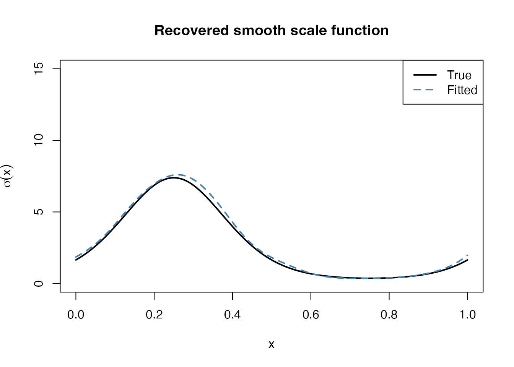
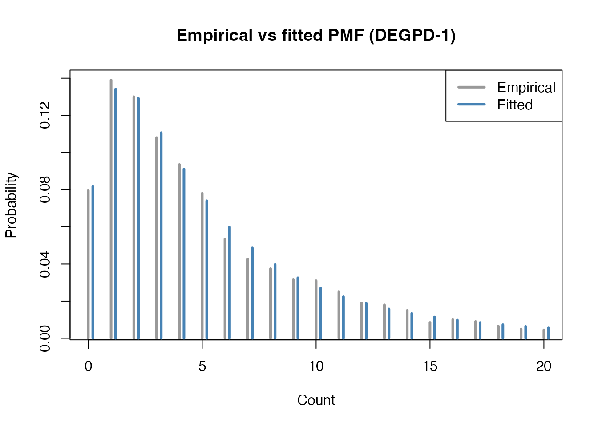
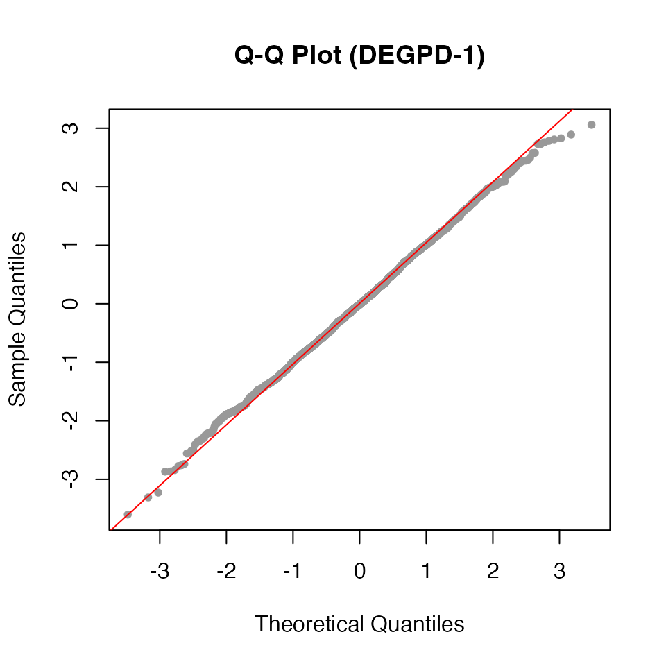
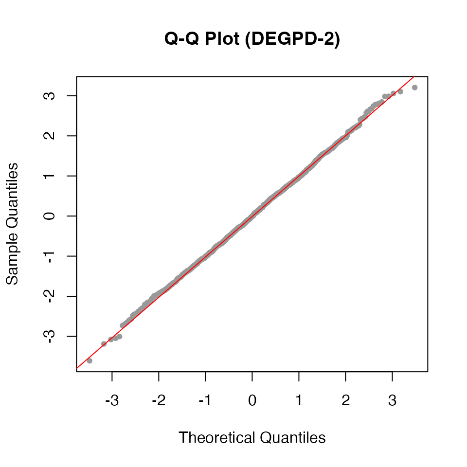
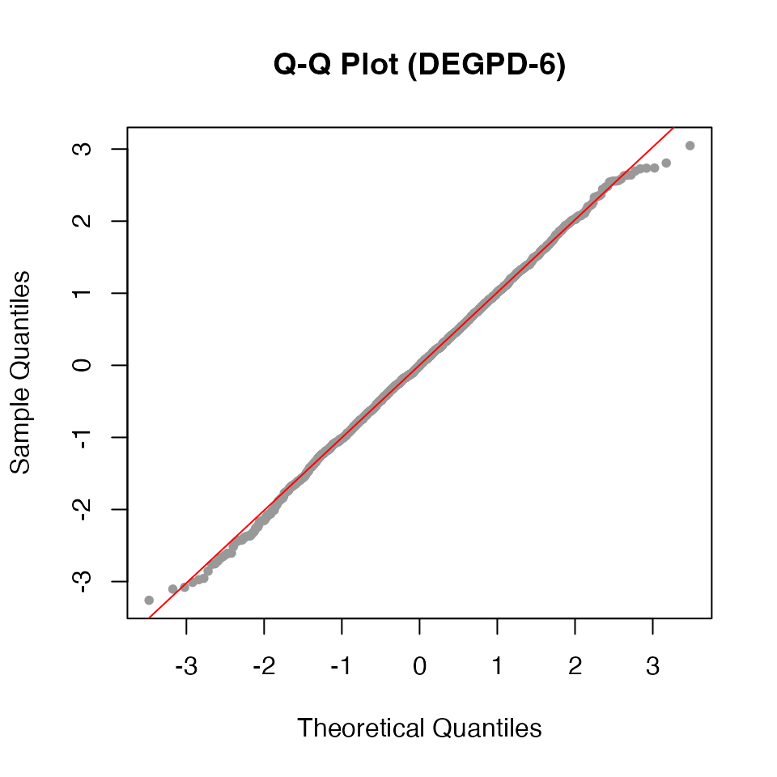
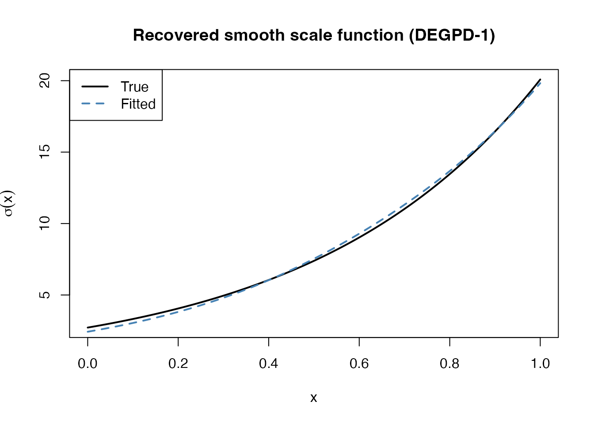
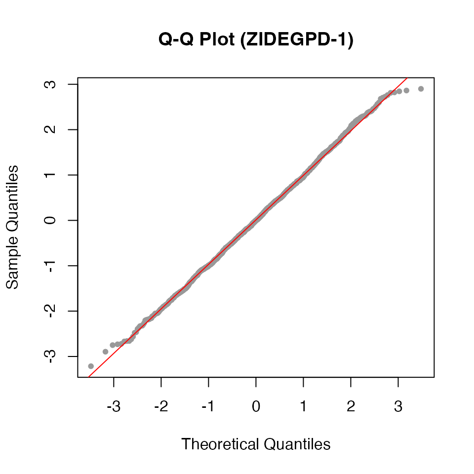

This vignette demonstrates the egpd package using
simulated data. Because the true parameters are known, we can verify
that the models recover them correctly. We also show how to fit models
with covariate-dependent parameters using smooth terms — the key
advantage of the GAM framework.
1. Continuous EGPD: intercept-only
We simulate from a continuous EGPD Model 1 with G(u) = u^kappa and fit the model back.
library(egpd)
set.seed(1)
# True parameters
sigma_true <- 2
xi_true <- 0.2
kappa_true <- 1.5
# Simulate
n <- 2000
y <- regpd(n, sigma = sigma_true, xi = xi_true, kappa = kappa_true, type = 1)
df <- data.frame(y = y, x = rep(1, n))
# Fit
fit <- egpd(list(lpsi = y ~ 1, xi = ~ 1, lkappa = ~ 1),
data = df, family = "egpd", egpd.args = list(m = 1))
summary(fit)
#>
#> ** Parametric terms **
#>
#> logscale
#> Estimate Std. Error t value Pr(>|t|)
#> (Intercept) 0.68 0.06 10.92 <2e-16
#>
#> shape
#> Estimate Std. Error t value Pr(>|t|)
#> (Intercept) 0.22 0.03 7.24 2.25e-13
#>
#> logkappa
#> Estimate Std. Error t value Pr(>|t|)
#> (Intercept) 0.39 0.05 8.39 <2e-16
#>
#> ** Smooth terms **Compare fitted parameters with truth on the response scale:
pars <- predict(fit, type = "response")[1, ]
truth <- c(scale = sigma_true, shape = xi_true, kappa = kappa_true)
cbind(true = truth, fitted = round(unlist(pars), 4))
#> true fitted
#> scale 2.0 1.9751
#> shape 0.2 0.2197
#> kappa 1.5 1.4738A Q-Q plot of randomized quantile residuals confirms the fit:
set.seed(1)
r <- rqresid(fit)
qqnorm(r, main = "Q-Q Plot (EGPD-1)", pch = 20, col = "grey60")
qqline(r, col = "red")
2. Continuous EGPD: smooth covariate effect on scale
The GAM framework allows any parameter to depend on covariates
through smooth functions. Here the scale parameter varies with a
covariate x via a sinusoidal function, while the shape and
kappa remain constant.
set.seed(42)
n <- 2000
x <- runif(n, 0, 1)
# Scale varies smoothly with x
sigma_x <- exp(0.5 + 1.5 * sin(2 * pi * x))
xi_true <- 0.1
kappa_true <- 1.5
y <- regpd(n, sigma = sigma_x, xi = xi_true, kappa = kappa_true, type = 1)
df <- data.frame(y = y, x = x)Fit with a smooth term on the log-scale parameter:
fit_smooth <- egpd(list(lpsi = y ~ s(x, k = 15), xi = ~ 1, lkappa = ~ 1),
data = df, family = "egpd", egpd.args = list(m = 1))
summary(fit_smooth)
#>
#> ** Parametric terms **
#>
#> logscale
#> Estimate Std. Error t value Pr(>|t|)
#> (Intercept) 0.56 0.06 10.11 <2e-16
#>
#> shape
#> Estimate Std. Error t value Pr(>|t|)
#> (Intercept) 0.08 0.03 2.87 0.00202
#>
#> logkappa
#> Estimate Std. Error t value Pr(>|t|)
#> (Intercept) 0.41 0.04 9.29 <2e-16
#>
#> ** Smooth terms **
#>
#> logscale
#> edf max.df Chi.sq Pr(>|t|)
#> s(x) 9.63 14 2795.83 <2e-16The plot method shows the estimated smooth effect. The
true function is 0.5 + 1.5 * sin(2*pi*x) on the log-scale,
centered around the intercept.
plot(fit_smooth)
We can also extract the predicted scale on a fine grid and compare with the truth.
xgrid <- data.frame(x = seq(0, 1, length = 200))
pred <- predict(fit_smooth, newdata = xgrid, type = "response")
plot(xgrid$x, exp(0.5 + 1.5 * sin(2 * pi * xgrid$x)), type = "l",
lwd = 2, col = "black", ylim = c(0, 15),
xlab = "x", ylab = expression(sigma(x)),
main = "Recovered smooth scale function")
lines(xgrid$x, pred$scale, col = "steelblue", lwd = 2, lty = 2)
legend("topright", legend = c("True", "Fitted"),
col = c("black", "steelblue"), lwd = 2, lty = c(1, 2))
3. Discrete DEGPD: parameter recovery
Simulate from a Discrete EGPD Model 1 and verify parameter recovery.
set.seed(2)
sigma_true <- 3
xi_true <- 0.3
kappa_true <- 2.0
n <- 2000
y <- rdiscegpd(n, sigma = sigma_true, xi = xi_true, kappa = kappa_true,
type = 1)
df <- data.frame(y = y, x = rep(1, n))
fit_d <- egpd(list(lsigma = y ~ 1, lxi = ~ 1, lkappa = ~ 1),
data = df, family = "degpd", degpd.args = list(m = 1))
summary(fit_d)
#>
#> ** Parametric terms **
#>
#> logscale
#> Estimate Std. Error t value Pr(>|t|)
#> (Intercept) 1.14 0.08 13.77 <2e-16
#>
#> logshape
#> Estimate Std. Error t value Pr(>|t|)
#> (Intercept) -1.13 0.1 -11.01 <2e-16
#>
#> logkappa
#> Estimate Std. Error t value Pr(>|t|)
#> (Intercept) 0.63 0.07 9.38 <2e-16
#>
#> ** Smooth terms **
pars_d <- predict(fit_d, type = "response")[1, ]
truth_d <- c(scale = sigma_true, shape = xi_true, kappa = kappa_true)
cbind(true = truth_d, fitted = round(unlist(pars_d), 4))
#> true fitted
#> scale 3.0 3.1256
#> shape 0.3 0.3245
#> kappa 2.0 1.8724Compare fitted and empirical PMFs:
xvals <- 0:20
emp_pmf <- tabulate(y + 1, nbins = max(xvals) + 1) / n
fit_pmf <- ddiscegpd(xvals, sigma = pars_d$scale[1], xi = pars_d$shape[1],
kappa = pars_d$kappa[1], type = 1)
plot(xvals, emp_pmf[seq_along(xvals)], type = "h", lwd = 3, col = "grey60",
main = "Empirical vs fitted PMF (DEGPD-1)",
xlab = "Count", ylab = "Probability")
lines(xvals + 0.2, fit_pmf, type = "h", lwd = 3, col = "steelblue")
legend("topright", legend = c("Empirical", "Fitted"),
col = c("grey60", "steelblue"), lwd = 3)
Q-Q plot of randomized quantile residuals:
set.seed(1)
r_d <- rqresid(fit_d)
qqnorm(r_d, main = "Q-Q Plot (DEGPD-1)", pch = 20, col = "grey60")
qqline(r_d, col = "red")
3b. Discrete DEGPD Model 2: parameter recovery
Model 2 uses a mixture of two power transformations: G(u) =
p·u^kappa1 + (1-p)·u^kappa2. We simulate from rdiscegpd()
with type = 6 and recover the five parameters.
set.seed(22)
sigma_true <- 3
xi_true <- 0.3
kappa1_true <- 1.5
kappa2_true <- 3.0
prob_true <- 0.6
n <- 2000
y <- rdiscegpd(n, sigma = sigma_true, xi = xi_true, kappa = kappa1_true,
delta = kappa2_true, prob = prob_true, type = 6)
df <- data.frame(y = y, x = rep(1, n))
cat("Range:", range(y), "\n")
#> Range: 0 150
cat("Mean:", mean(y), "\n")
#> Mean: 6.5425
fit_d2 <- egpd(list(lsigma = y ~ 1, lxi = ~ 1, lkappa1 = ~ 1, ldkappa = ~ 1,
logitp = ~ 1),
data = df, family = "degpd", degpd.args = list(m = 2))
summary(fit_d2)
#>
#> ** Parametric terms **
#>
#> logscale
#> Estimate Std. Error t value Pr(>|t|)
#> (Intercept) 0.23 0.36 0.65 0.259
#>
#> logshape
#> Estimate Std. Error t value Pr(>|t|)
#> (Intercept) -0.84 0.1 -8.79 <2e-16
#>
#> logkappa1
#> Estimate Std. Error t value Pr(>|t|)
#> (Intercept) 0.87 0.26 3.3 0.000492
#>
#> logdkappa
#> Estimate Std. Error t value Pr(>|t|)
#> (Intercept) 2.15 0.6 3.57 0.000179
#>
#> logitp
#> Estimate Std. Error t value Pr(>|t|)
#> (Intercept) 0 0.28 0 0.499
#>
#> ** Smooth terms **Compare fitted parameters with truth on the response scale. Note the
reparameterization: kappa2 = kappa1 + exp(ldkappa), so the model
estimates ldkappa (log of the difference) rather than
kappa2 directly.
pars_d2 <- predict(fit_d2, type = "response")[1, ]
truth_d2 <- c(scale = sigma_true, shape = xi_true, kappa1 = kappa1_true,
kappa2 = kappa2_true, p = prob_true)
fitted_d2 <- round(unlist(pars_d2), 4)
cbind(true = truth_d2, fitted = fitted_d2)
#> true fitted
#> scale 3.0 1.2624
#> shape 0.3 0.4299
#> kappa1 1.5 2.3865
#> kappa2 3.0 8.5558
#> p 0.6 0.4998Q-Q plot of randomized quantile residuals for the Model 2 fit:
set.seed(1)
r_d2 <- rqresid(fit_d2)
qqnorm(r_d2, main = "Q-Q Plot (DEGPD-2)", pch = 20, col = "grey60")
qqline(r_d2, col = "red")
3c. Discrete DEGPD Model 5: truncated normal parameter recovery
Model 5 uses a truncated normal G-transformation. We simulate and verify parameter recovery.
set.seed(55)
sigma_true <- 3
xi_true <- 0.3
kappa_true <- 2.0
n <- 2000
y <- rdiscegpd(n, sigma = sigma_true, xi = xi_true, kappa = kappa_true,
type = 2)
df <- data.frame(y = y, x = rep(1, n))
cat("Range:", range(y), "\n")
#> Range: 0 120
cat("Mean:", mean(y), "\n")
#> Mean: 4.934
fit_d5 <- egpd(list(lsigma = y ~ 1, lxi = ~ 1, lkappa = ~ 1),
data = df, family = "degpd", degpd.args = list(m = 5))
summary(fit_d5)
#>
#> ** Parametric terms **
#>
#> logscale
#> Estimate Std. Error t value Pr(>|t|)
#> (Intercept) 1.13 0.09 13.24 <2e-16
#>
#> logshape
#> Estimate Std. Error t value Pr(>|t|)
#> (Intercept) -1.15 0.12 -9.55 <2e-16
#>
#> logkappa
#> Estimate Std. Error t value Pr(>|t|)
#> (Intercept) 0.52 0.26 2 0.0226
#>
#> ** Smooth terms **
pars_d5 <- predict(fit_d5, type = "response")[1, ]
truth_d5 <- c(scale = sigma_true, shape = xi_true, kappa = kappa_true)
cbind(true = truth_d5, fitted = round(unlist(pars_d5), 4))
#> true fitted
#> scale 3.0 3.0847
#> shape 0.3 0.3169
#> kappa 2.0 1.6820
set.seed(1)
r_d5 <- rqresid(fit_d5)
qqnorm(r_d5, main = "Q-Q Plot (DEGPD-5)", pch = 20, col = "grey60")
qqline(r_d5, col = "red")
3d. Discrete DEGPD Model 6: truncated beta parameter recovery
Model 6 uses a truncated beta G-transformation. We simulate and verify parameter recovery.
set.seed(66)
sigma_true <- 3
xi_true <- 0.3
kappa_true <- 2.0
n <- 2000
y <- rdiscegpd(n, sigma = sigma_true, xi = xi_true, kappa = kappa_true,
type = 3)
df <- data.frame(y = y, x = rep(1, n))
cat("Range:", range(y), "\n")
#> Range: 0 97
cat("Mean:", mean(y), "\n")
#> Mean: 5.0585
fit_d6 <- egpd(list(lsigma = y ~ 1, lxi = ~ 1, lkappa = ~ 1),
data = df, family = "degpd", degpd.args = list(m = 6))
summary(fit_d6)
#>
#> ** Parametric terms **
#>
#> logscale
#> Estimate Std. Error t value Pr(>|t|)
#> (Intercept) 1.01 0.07 15.12 <2e-16
#>
#> logshape
#> Estimate Std. Error t value Pr(>|t|)
#> (Intercept) -1.15 0.1 -11.11 <2e-16
#>
#> logkappa
#> Estimate Std. Error t value Pr(>|t|)
#> (Intercept) 0.85 0.08 11.32 <2e-16
#>
#> ** Smooth terms **
pars_d6 <- predict(fit_d6, type = "response")[1, ]
truth_d6 <- c(scale = sigma_true, shape = xi_true, kappa = kappa_true)
cbind(true = truth_d6, fitted = round(unlist(pars_d6), 4))
#> true fitted
#> scale 3.0 2.7320
#> shape 0.3 0.3178
#> kappa 2.0 2.3486
set.seed(1)
r_d6 <- rqresid(fit_d6)
#> Warning in qnorm(u): NaNs produced
qqnorm(r_d6, main = "Q-Q Plot (DEGPD-6)", pch = 20, col = "grey60")
qqline(r_d6, col = "red")
4. Discrete DEGPD: smooth covariate effect
Now simulate discrete data where the scale varies with a covariate.
set.seed(7)
n <- 2000
x <- runif(n, 0, 1)
sigma_x <- exp(1 + 2 * x)
xi_true <- 0.3
kappa_true <- 1.5
y <- rdiscegpd(n, sigma = sigma_x, xi = xi_true, kappa = kappa_true, type = 1)
df <- data.frame(y = y, x = x)
fit_ds <- egpd(list(lsigma = y ~ s(x, k = 10), lxi = ~ 1, lkappa = ~ 1),
data = df, family = "degpd", degpd.args = list(m = 1))
summary(fit_ds)
#>
#> ** Parametric terms **
#>
#> logscale
#> Estimate Std. Error t value Pr(>|t|)
#> (Intercept) 1.98 0.07 27.9 <2e-16
#>
#> logshape
#> Estimate Std. Error t value Pr(>|t|)
#> (Intercept) -1.11 0.1 -11.41 <2e-16
#>
#> logkappa
#> Estimate Std. Error t value Pr(>|t|)
#> (Intercept) 0.38 0.05 7.16 4.17e-13
#>
#> ** Smooth terms **
#>
#> logscale
#> edf max.df Chi.sq Pr(>|t|)
#> s(x) 1.9 9 621.91 <2e-16
plot(fit_ds)Compare fitted and true scale on a grid:
xgrid <- data.frame(x = seq(0, 1, length = 200))
pred_ds <- predict(fit_ds, newdata = xgrid, type = "response")
plot(xgrid$x, exp(1 + 2 * xgrid$x), type = "l", lwd = 2, col = "black",
xlab = "x", ylab = expression(sigma(x)),
main = "Recovered smooth scale function (DEGPD-1)")
lines(xgrid$x, pred_ds$scale, col = "steelblue", lwd = 2, lty = 2)
legend("topleft", legend = c("True", "Fitted"),
col = c("black", "steelblue"), lwd = 2, lty = c(1, 2))
5. Zero-inflated DEGPD: estimating zero-inflation
Simulate from a ZIDEGPD with known zero-inflation probability and verify the model recovers it.
set.seed(3)
sigma_true <- 3
xi_true <- 0.3
kappa_true <- 1.5
pi_true <- 0.3
n <- 2000
y <- rzidiscegpd(n, pi = pi_true, sigma = sigma_true, xi = xi_true,
kappa = kappa_true, type = 1)
df <- data.frame(y = y, x = rep(1, n))
cat("Proportion of zeros:", mean(y == 0), "\n")
#> Proportion of zeros: 0.398
cat("Expected proportion: pi + (1-pi)*P(Y=0) =",
round(pi_true + (1 - pi_true) * ddiscegpd(0, sigma = sigma_true,
xi = xi_true, kappa = kappa_true, type = 1), 3), "\n")
#> Expected proportion: pi + (1-pi)*P(Y=0) = 0.399
fit_zi <- egpd(list(lsigma = y ~ 1, lxi = ~ 1, lkappa = ~ 1, logitpi = ~ 1),
data = df, family = "zidegpd", zidegpd.args = list(m = 1))
summary(fit_zi)
#>
#> ** Parametric terms **
#>
#> logscale
#> Estimate Std. Error t value Pr(>|t|)
#> (Intercept) 1.12 0.17 6.53 3.22e-11
#>
#> logshape
#> Estimate Std. Error t value Pr(>|t|)
#> (Intercept) -1.37 0.21 -6.53 3.22e-11
#>
#> logkappa
#> Estimate Std. Error t value Pr(>|t|)
#> (Intercept) 0.47 0.22 2.17 0.0149
#>
#> logitpi
#> Estimate Std. Error t value Pr(>|t|)
#> (Intercept) -0.78 0.13 -6.16 3.56e-10
#>
#> ** Smooth terms **
pars_zi <- predict(fit_zi, type = "response")[1, ]
truth_zi <- c(scale = sigma_true, shape = xi_true, kappa = kappa_true,
pi = pi_true)
cbind(true = truth_zi, fitted = round(unlist(pars_zi), 4))
#> true fitted
#> scale 3.0 3.0684
#> shape 0.3 0.2551
#> kappa 1.5 1.5995
#> pi 0.3 0.3141Q-Q plot of randomized quantile residuals for the ZIDEGPD fit:
set.seed(1)
r_zi <- rqresid(fit_zi)
qqnorm(r_zi, main = "Q-Q Plot (ZIDEGPD-1)", pch = 20, col = "grey60")
qqline(r_zi, col = "red")
6. Model selection: DEGPD vs ZIDEGPD
A key question in practice is whether zero-inflation is needed. We fit both a DEGPD and a ZIDEGPD to the zero-inflated data above and compare by AIC.
fit_nozi <- egpd(list(lsigma = y ~ 1, lxi = ~ 1, lkappa = ~ 1),
data = df, family = "degpd", degpd.args = list(m = 1))
data.frame(
Model = c("DEGPD-1 (no ZI)", "ZIDEGPD-1"),
logLik = c(logLik(fit_nozi), logLik(fit_zi)),
AIC = c(AIC(fit_nozi), AIC(fit_zi))
)
#> Model logLik AIC
#> 1 DEGPD-1 (no ZI) -4555.870 9117.741
#> 2 ZIDEGPD-1 -4544.395 9096.789The ZIDEGPD model correctly fits better, confirming that zero-inflation is present in the data.
7. Quantile prediction
The predict method with type = "quantile"
computes quantile estimates from any fitted model.
probs <- c(0.5, 0.9, 0.95, 0.99)
# Theoretical quantiles from the known distribution
true_q <- qzidiscegpd(probs, pi = pi_true, sigma = sigma_true,
xi = xi_true, kappa = kappa_true, type = 1)
# Fitted quantiles
fit_q <- predict(fit_zi, type = "quantile", prob = probs)
data.frame(prob = probs,
true = true_q,
fitted = unlist(fit_q[1, ]),
empirical = quantile(y, probs))
#> prob true fitted empirical
#> q:0.5 0.50 1 1 1.00
#> q:0.9 0.90 10 9 10.00
#> q:0.95 0.95 14 14 14.00
#> q:0.99 0.99 30 27 27.01